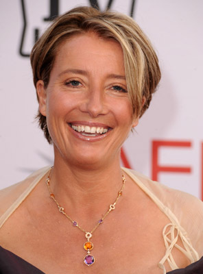
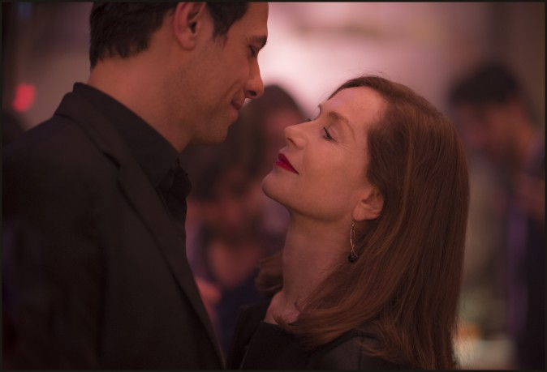

#8934 Wie in alten Zeiten
Alternativ: The Love Punch

 IMDB-Wertung: 5.7 / 10
IMDB-Wertung: 5.7 / 10  Metascore: 0
Metascore: 0 
Richard und Kate Jones sind ein geschiedenes Paar, das nach dem Verkauf von Richards Unternehmen kurz davor steht, alles zu verlieren. Denn an seinem letzten Arbeitstag muss Richard feststellen, dass die Firmenübernahme keineswegs wie geplant abläuft: Er ist beim Verkauf einem Betrüger aufgesessen und von einem Tag auf den anderen pleite. Auch Richards Rentenrücklagen gehen mit seiner Firma unter. Um den unlauteren Geschäftsmann aufzuspüren, der für den Deal verantwortlich ist, tut sich Richard mit seiner Ex-Frau zusammen. Die beiden reisen nach Frankreich, um ihre Altervorsorge zurück zu gewinnen. Dort eilen ihnen die alten Freunde Jerry und Pen zu Hilfe. Ein aufreibendes Katz-und-Maus-Spiel beginnt, bei dem nicht nur ein Juwelenraub an der Côte d'Azur die Beteiligten in Atem hält – nach und nach scheinen sich auch Kate und Richard wieder näherzukommen...
Jahr: 2013
Dauer: 94 Minuten
FSK: 0
Land: Frankreich Studio: SquareOne EntertainmentTonspuren: DTS - ,
Untertitel: Deutsch,
Auflösung: 1080p (1920x800) Größe: 5457 MB
Genre: Komödie
Regisseur: Joel Hopkins
Drehbuch: Joel Hopkins
Soundtrack: Jean-Michel Bernard
Darsteller:
-  Emma Thompson als Kate
 Pierce Brosnan als Richard
Pierce Brosnan als Richard- Celia Imrie als Pen
- Timothy Spall als Jerry
- Louise Bourgoin als Manon Fontaine
-  Laurent Lafitte als Vincent Kruger
- Marisa Berenson als Clothilde
- Ellen Thomas als Doreen
- Tuppence Middleton als Sophie
- Adam Byron als Tyler
- Eleanor Matsuura als Michaela
- Sabine Crossen als Texan couple woman 1
- Julie Ordon als Girl 1 beach club
- Vanessa Guide als Girl 2 beach club
- Linda Hardy als Glaxo secretary
- Tom Morton als Tim the Groom
- Christopher Craig als Culco Employee 1
- Catriona MacColl als Wedding guest
- Patrice Cols als Château guard
- Vincent Haquin als Henchman
- Floriane Andersen als Secretary
- Blanche Dezert als Ambassador
- Thanh Ingle-Lai als The maid (uncredited)
- Jordan Jones als Lover (uncredited)
- Olivier Chantreau als Jean-Baptiste Durain
- Jack Wilkinson als Matt
- John Ramm als Ken
- Jean-Louis Barcelona als Minion
- Bruce McEwen als Texan couple man 1
- Christophe Prévost als Texan couple man 2
- Liz Coke als Texan couple woman 1
- Murielle Hilaire als Girl 3 beach club
- Max Hayter als Marcus
- Anna Brooke als Janice
- Alan Fairbairn als Culco Employee 2
- Sinan Bertrand als Master of ceremonies
- Paloma Hidalgo als Sister (uncredited)
- Senie Priti als Wedding guest (uncredited)
Datei: X:\2013(N-Z)\Wie in alten Zeiten (2013, FSK0, 1920x800).mkv seit 08.05.2018
Festplatte: HD 2013(I-Z)-2014(A-Z)
 Es gibt insgesamt 133 Filme in der Gruppe '2013(N-Z)'
Es gibt insgesamt 133 Filme in der Gruppe '2013(N-Z)'